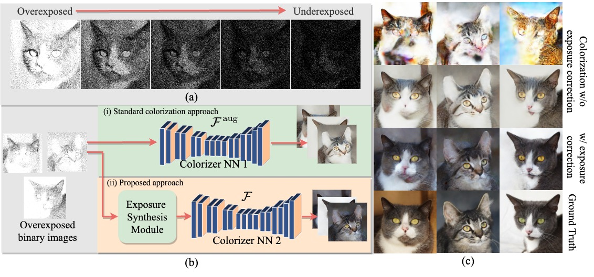
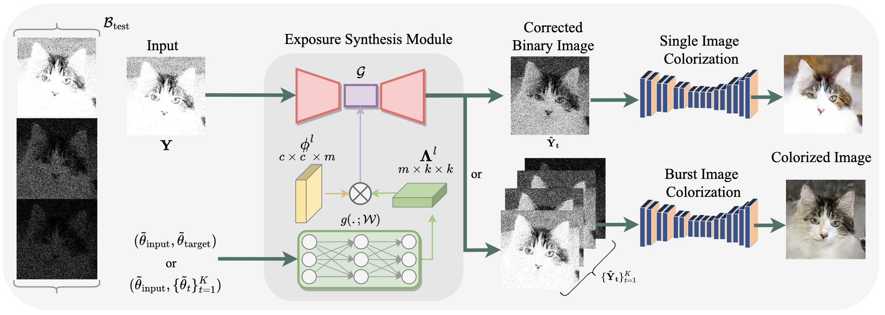

Abstract
The astonishing development of single-photon cameras has created an unprecedented opportunity for scientific and industrial imaging. However, the high data throughput generated by these 1-bit sensors creates a significant bottleneck for low-power applications. In this paper, we explore the possibility of generating a color image from a single binary frame of a single-photon camera. We evidently find this problem being particularly difficult to standard colorization approaches due to the substantial degree of exposure variation. The core innovation of our paper is an exposure synthesis model framed under a neural ordinary differential equation (NeuralODE) that allows us to generate a continuum of exposures from a single observation. This innovation ensures consistent exposure in binary images that colorizers take on, resulting in notably enhanced colorization. We demonstrate applications of the method in single-image and burst colorization and show superior generative performance over baselines.
Colorization Challenge
Methodology
